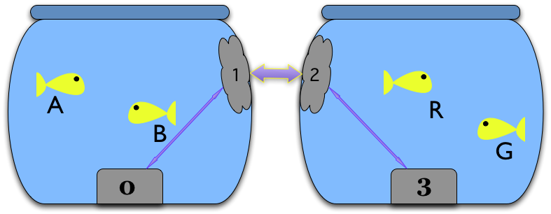

KBUS: A simple messaging system
| Author: | Tony Ibbs |
|---|---|
| Contact: | tibs@tonyibbs.co.uk |
| Date: | July 2010 |
| Repository: | http://code.google.com/p/kbus/ |
How - A simple introduction to using KBUS
Senders and Listeners
This is intended as a very simple introduction to the basics of how to use KBUS. The examples are not realistic, but should give some flavour of the way that KBUS works.
We shall start with a single "actor" in our virtual playlet:
First our actor needs to connect to KBUS itself, by opening a Ksock:
- Introducing Rosencrantz
Terminal 1: Rosencrantz
Python 2.6.4 (r264:75706, Dec 7 2009, 18:45:15) [GCC 4.4.1] on linux2 Type "help", "copyright", "credits" or "license" for more information. >>> from kbus import Ksock >>> rosencrantz = Ksock(0) >>> print rosencrantz Ksock device 0, id 1, mode read/write
The argument to Ksock is the number of the KBUS device to connect to. If KBUS is installed, then device 0 will always exist, so it is a safe choice.
The default is to open the device for read and write - this makes sense since we will want to write messages to it.
Once we've done that, we can try creating and sending a message:
Terminal 1: Rosencrantz
>>> from kbus import Message >>> ahem = Message('$.Actor.Speak', 'Ahem') >>> rosencrantz.send_msg(ahem) MessageId(0, 1)
The call to Message creates a new message named $.Actor.Speak, with the message data "Ahem".
All message names are composed of a ``$`` followed by a series of dot-separated parts.
Data doesn't have to be a string, it can be any sequence of bytes, but a simple string makes sense for these examples.
The next line sends it. For convenience, the send_msg method also returns the message id assigned to the message by KBUS - this can be used to identify a specific message.
When a message is created by a user, it does not have a message id.
When the KBUS kernel module makes its internal copy of the message, it assigns it a new message id, which uniquely identifies the message on this KBUS device. Basically, the second number in the id is incremented for each message.
(Note this is not quite the whole story, as KBUS behaves differently if given a message that already has an id set, but that's for use with Limpets, which we'll ignore for now.)
This will succeed, but doesn't do anything very useful, because no-one is listening. So, we shall need a second process, which we shall start in a new terminal.
Terminal 2: Audience
Python 2.6.4 (r264:75706, Dec 7 2009, 18:45:15) [GCC 4.4.1] on linux2 Type "help", "copyright", "credits" or "license" for more information. >>> from kbus import * >>> audience = Ksock(0) >>> audience.bind('$.Actor.Speak')
I don't recommend using from thing import *, but it does make use at the prompt easier, and thus KBUS is designed to be safe for this purpose.
Here, the audience has opened the same KBUS device (messages cannot be sent between different KBUS devices). We've still opened it for write, since they might, for instance, want to be able to send $.Applause messages later on. They've then 'bound to' the $.Actor.Speak message, which means they will receive any messages that are sent with that name.
(In fact, all messages with that name sent by anyone, not just by rosencrantz.)
Now, if Rosencrantz sends the message again, the audience can receive it.
Terminal 1: Rosencrantz
>>> rosencrantz.send_msg(ahem) MessageId(0, 2)Terminal 2: Audience
>>> audience.read_next_msg() Message('$.Actor.Speak', data='Ahem', from_=1L, id=MessageId(0, 2))
Note the new message has a new message id, and the message read by the audience has the same message id - i.e., is the same message.
A friendlier representation of the message is given if one prints it:
Terminal 2: Audience
>>> print _ <Announcement '$.Actor.Speak', id=[0:2], from=1, data='Ahem'>
"Plain" messages are termed "announcements", since they are just being broadcast to whoever might be listening.
The message also indicates who it is from (in the from_ field). This gives the Ksock id of the Sender, which we can determine with:
Terminal 1: Rosencrantz
>>> rosencrantz.ksock_id() 1L
Since there was only one message sent, if the audience tries to listen again, they're not going to "hear" anything new:
Terminal 2: Audience
>>> print audience.read_next_msg() None
We can set the audience to listening for messages as they arrive using 'select' in the traditional manner:
Terminal 2: Audience
>>> import select >>> while 1: ... (r,w,x) = select.select([audience], [], []) ... # At this point, r should contain audience ... print audience.read_next_msg() ...
(although perhaps with more error checking, and maybe even a timeout, in a real example).
So now if Rosencrantz speaks...
Terminal 1: Rosencrantz
>>> rosencrantz.send_msg(Message('$.Actor.Speak', 'Hello there')) MessageId(0, 3) >>> rosencrantz.send_msg(Message('$.Actor.Speak', 'Can you hear me?')) MessageId(0, 4)
...the audience should be able to hear him:
Terminal 2: Audience
<Announcement '$.Actor.Speak', id=[0:3], from=1, data='Hello there'> <Announcement '$.Actor.Speak', id=[0:4], from=1, data='Can you hear me?'>
Let's introduce another participant, also on the same KBUS device:
Terminal 3: Guildenstern
Python 2.6.4 (r264:75706, Dec 7 2009, 18:45:15) [GCC 4.4.1] on linux2 Type "help", "copyright", "credits" or "license" for more information. >>> from kbus import * >>> guildenstern = Ksock(0) >>> print guildenstern Ksock device 0, id 3, mode read/write
We can start them listening as well - this time using a wildcard.
Terminal 3: Guildenstern
>>> guildenstern.bind('$.Actor.*')
Guildenstern will hear any message whose name starts with the characters $.Actor..
In retrospect this makes sense for the audience, too - let's fix that.
Terminal 2: Audience
<CTRL-C> Traceback (most recent call last): File "<stdin>", line 2, in <module> KeyboardInterrupt >>> audience.bind('$.Actor.*') >>> while 1: ... print audience.wait_for_msg() ...
For convenience, the KBUS Python binding provides the wait_for_msg method to handle the simple form of select.
It seems likely that rosencrantz will want to hear his colleague as well:
Terminal 1: Rosencrantz
>>> rosencrantz.bind('$.Actor.*')
So now let guildenstern speak:
Terminal 3: Guildenstern
>>> guildenstern.send_msg(Message('$.Actor.Speak', 'Pssst!')) MessageId(0, 5) >>> # Remember guildenstern is himself listening to '$.Actor.*' ... print guildenstern.read_next_msg() <Announcement '$.Actor.Speak', id=[0:5], from=3, data='Pssst!'>
and rosencrantz hears:
Terminal 1: Rosencrantz
>>> msg = rosencrantz.read_next_msg() >>> print msg <Announcement '$.Actor.Speak', id=[0:5], from=3, data='Pssst!'>
However, when we look to the audience, we see:
Terminal 2: Audience
<Announcement '$.Actor.Speak', id=[0:5], from=3, data='Pssst!'> <Announcement '$.Actor.Speak', id=[0:5], from=3, data='Pssst!'>
This is because the audience has bound to the message twice - it is hearing it once because it asked to receive every $.Actor.Speak message, and again because it asked to hear any message matching $.Actor.*.
The solution is simple - ask not to hear the more specific version.
Terminal 2: Audience
<CTRL-C> Traceback (most recent call last): File "<stdin>", line 2, in <module> File "/home/tibs/sw/kbus/python/kbus/ksock.py", line 492, in wait_for_msg (r, w, x) = select.select([self], [], [], timeout) KeyboardInterrupt >>> audience.unbind('$.Actor.Speak') >>> while 1: ... msg = audience.wait_for_msg() ... print msg ...
Note that the unbinding must match the binding exactly.
Requests and Repliers
We've shown that KBUS allows one to "announce" (or, less politely, "shout") messages, but KBUS also supports asking questions.
So let's make Guildenstern act as a Replier for "query" messages...
Terminal 3: Guildenstern
>>> guildenstern.bind('$.Actor.Ask.Guildenstern', True)(Only one person may be bound as Replier for a particular message name at any one time, so that it is unambiguous who is expected to do the replying.
Also, if a Sender tries to send a Request, but no-one has bound to that message name as a Replier, then an error is raised (contrast that with ordinary messages, where if no-one is listening, the message just gets ignored).)
If Rosencrantz then sends a Request of that name:
Terminal 1: Rosencrantz
>>> from kbus import Request >>> req = Request('$.Actor.Ask.Guildenstern', 'Were you speaking to me?') >>> rosencrantz.send_msg(req) MessageId(0, 6)
Remember, Rosencrantz still hears himself speaking - so let's undo that...
Terminal 1: Rosencrantz
>>> print rosencrantz.read_next_msg() <Request '$.Actor.Ask.Guildenstern', id=[0:6], from=1, flags=0x1 (REQ), data='Were you speaking to me?'> >>> rosencrantz.unbind('$.Actor.*')
Guildenstern receives the request:
Terminal 3: Guildenstern
>>> req = guildenstern.read_next_msg() >>> print req <Request '$.Actor.Ask.Guildenstern', id=[0:6], from=1, flags=0x3 (REQ,YOU), data='Were you speaking to me?'>
The flags indicate that this message is a Request (REQ), and also that this is a Request that guildenstern should reply to (YOU).
There's a convenience method to find out if a particular message needs a reply:
Terminal 3: Guildenstern
>>> print req.wants_us_to_reply() True
Of course, guildenstern also gets a copy of the message because of his binding as a Listener to $.Actor.*:
Terminal 3: Guildenstern
>>> msg = guildenstern.read_next_msg() >>> print msg <Request '$.Actor.Ask.Guildenstern', id=[0:6], from=1, flags=0x1 (REQ), data='Were you speaking to me?'>
This second copy of the message is still marked as a Request (REQ), but is not marked as needing a reply (no YOU flag).
Incidentally, KBUS does guarantee that the Request marked for reply will always be the first copy of the message to be received.
There is, in fact, a way to ask KBUS to only deliver one copy of messages with a given name, the want_messages_once method, but I still have some reservations about its use, and anyway, in this case it makes more sense for Guildenstern just to unbind from $.Actor.*.
Terminal 3: Guildenstern
>>> guildenstern.unbind('$.Actor.*')
Regardless, Guildenstern can then reply:
Terminal 3: Guildenstern
>>> rep = reply_to(req, 'Yes, yes I was') >>> print rep <Reply '$.Actor.Ask.Guildenstern', to=1, in_reply_to=[0:6], data='Yes, yes I was'> >>> guildenstern.send_msg(rep) MessageId(0, 7) >>> guildenstern.read_next_msg()
The reply_to convenience function crafts a new Reply message, with the various message parts set in an appropriate manner. And thus:
Terminal 1: Rosencrantz
>>> rep = rosencrantz.read_next_msg() >>> print rep <Reply '$.Actor.Ask.Guildenstern', id=[0:7], to=1, from=3, in_reply_to=[0:6], data='Yes, yes I was'>
Note that Rosencrantz didn't need to be bound to this message to receive it - he will always get a Reply to any Request he sends (KBUS goes to some lengths to guarantee this, so that even if Guildenstern closes his Ksock, it will generate a "gone away" message for him).
Of course, the audience was listening.
Terminal 2: Audience
<Request '$.Actor.Ask.Guildenstern', id=[0:6], from=1, flags=0x1 (REQ), data='Were you speaking to me?'> <Reply '$.Actor.Ask.Guildenstern', id=[0:7], to=1, from=3, in_reply_to=[0:6], data='Yes, yes I was'>
Stateful requests
Sometimes it is useful to accumulate state at one end of a conversation. In such cases, the Sender wants to be sure that the same Replier is replying to any Requests. If the original Replier unbinds, or even disconnects from the Ksock, and someone else binds as Replier instead, that new someone will clearly not have the requisite state, and thus the Sender would like to know that this has occurred.
Terminal 1: Rosencrantz
>>> # About to start tossing coins ... req = Request('$.Actor.Ask.Guildenstern', ... 'Will you count heads for me?') >>> rosencrantz.send_msg(req) MessageId(0, 8)Terminal 3: Guildenstern
>>> req = guildenstern.read_next_msg() >>> guildenstern.send_msg(reply_to(req, 'Yes, yes I shall')) MessageId(0, 9) >>> guildenstern.bind('$.Actor.CoinToss', True) >>> heads = 0 >>> while True: ... toss = guildenstern.wait_for_msg() ... print toss ... if toss.data == 'Head': ... print 'A head - amazing' ... heads += 1 ... else: ... print 'Bah, tails' ... guildenstern.send_msg(reply_to(toss, 'Head count is %d'%heads)) ...Terminal 1: Rosencrantz
>>> rep = rosencrantz.read_next_msg() >>> print rep.from_ 3 >>> # Throws a head ... from kbus import stateful_request >>> sreq = stateful_request(rep, '$.Actor.CoinToss', 'Head') >>> print sreq <Request '$.Actor.CoinToss', to=3, flags=0x1 (REQ), data='Head'> >>> rosencrantz.send_msg(sreq) MessageId(0, 10)
The stateful_request is a convenience for preparing stateful request messages based on an earlier Reply. It takes the from_ field from the Reply, and uses it as the to for the new Request. Having a specific to field is what makes the request stateful - sending it will fail if it is not going to be delivered to exactly that Ksock id.
Terminal 3: Guildenstern
<Request '$.Actor.CoinToss', id=[0:10], to=3, from=1, flags=0x3 (REQ,YOU), data='Head'> A head - amazing MessageId(0, 11)
The same again:
Terminal 1: Rosencrantz
>>> count = rosencrantz.read_next_msg() >>> print 'So,',count.data So, Head count is 1 >>> # Throws a head ... sreq = stateful_request(rep, '$.Actor.CoinToss', 'Head') >>> rosencrantz.send_msg(sreq) MessageId(0, 12)Terminal 3: Guildenstern
<Request '$.Actor.CoinToss', id=[0:12], to=3, from=1, flags=0x3 (REQ,YOU), data='Head'> A head - amazing MessageId(0, 13)
Rosencrantz is good at throwing heads:
Terminal 1: Rosencrantz
>>> count = rosencrantz.read_next_msg() >>> print 'So,',count.data So, Head count is 2 >>> # Throws a head
But, aha, Falstaff intervenes, and forces Guildenstern to disconnect:
Terminal 3: Guildenstern
<CTRL-C> Traceback (most recent call last): File "<stdin>", line 2, in <module> File "/home/tibs/sw/kbus/python/kbus/ksock.py", line 492, in wait_for_msg (r, w, x) = select.select([self], [], [], timeout) KeyboardInterrupt >>> print 'Falstaff! No! Ouch!' Falstaff! No! Ouch! >>> guildenstern.close()
And Falstaff then binds as Replier to the CoinToss message name, in an attempt to hijack the conversation - although, of course, he has no idea of how many heads have been tossed, so would not actually be of any use in this conversation:
Terminal 4: Falstaff
Python 2.6.4 (r264:75706, Dec 7 2009, 18:45:15) [GCC 4.4.1] on linux2 Type "help", "copyright", "credits" or "license" for more information. >>> from kbus import * >>> falstaff = Ksock(0) >>> falstaff.bind('$.Actor.CoinToss', True)
Innocently, Rosencrantz continues, but since the intended recipient has gone away, the message cannot be sent:
Terminal 1: Rosencrantz
... sreq = stateful_request(rep, '$.Actor.CoinToss', 'Head') >>> rosencrantz.send_msg(sreq) Traceback (most recent call last): File "<stdin>", line 1, in <module> File "/home/tibs/sw/kbus/python/kbus/ksock.py", line 432, in send_msg return self.send() File "/home/tibs/sw/kbus/python/kbus/ksock.py", line 220, in send fcntl.ioctl(self.fd, Ksock.IOC_SEND, arg); IOError: [Errno 32] Broken pipe
And Rosencrantz discovers that, in fact, state has been lost, skulduggery has been done, and so forth.
The Python interface is not terribly helpful with interpreting IOError error numbers, but there is a useful commandline utility that reports both the standard Unix meaning of an errno, and also the specfic KBUS meaning (as given in the KBUS documentation). So, for instance:
$ errno.py 32 Error 32 (0x20) is EPIPE: Broken pipe KBUS: On attempting to send 'to' a specific replier, the replier with that id is no longer bound to the given message's name.
From the audience's point of view:
Terminal 2: Audience
<Request '$.Actor.Ask.Guildenstern', id=[0:8], from=1, flags=0x1 (REQ), data='Will you count heads for me?'> <Reply '$.Actor.Ask.Guildenstern', id=[0:9], to=1, from=3, in_reply_to=[0:8], data='Yes, yes I shall'> <Request '$.Actor.CoinToss', id=[0:10], to=3, from=1, flags=0x1 (REQ), data='Head'> <Reply '$.Actor.CoinToss', id=[0:11], to=1, from=3, in_reply_to=[0:10], data='Head count is 1'> <Request '$.Actor.CoinToss', id=[0:12], to=3, from=1, flags=0x1 (REQ), data='Head'> <Reply '$.Actor.CoinToss', id=[0:13], to=1, from=3, in_reply_to=[0:12], data='Head count is 2'>
Tidying up
Just to show that these are real Python processes.
And to end things...
Terminal 2: Audience
<CTRL-C> Traceback (most recent call last): File "<stdin>", line 2, in <module> File "/home/tibs/sw/kbus/python/kbus/ksock.py", line 492, in wait_for_msg (r, w, x) = select.select([self], [], [], timeout) KeyboardInterrupt >>> exit()
Tidy everyone else up as well (showing that no-one has any messages left):
Terminal 1: Rosencrantz
>>> for msg in rosencrantz: ... print msg ... >>> exit()Terminal 3: Guildenstern
>>> exit()Terminal 4: Falstaff
>>> for msg in falstaff: ... print msg ... >>> exit()
Summary
- To send or receive messages, a process opens a Ksock.
- A process can send messages (be a Sender).
- A process can bind to receive messages (be a Listener) by message name.
- When binding to a message name, wildcards can be used.
- When binding to a message name, a process can say it wants to receive Requests with that name (be a Replier)
- There can only be one Replier for a given message name.
- There can be any number of Listeners for a given message name.
- It is not an error to send an ordinary message if no-one is listening.
- It is an error to send a Request if there is no Replier.
- Stateful Reqests insist that the expected Replier is replying.
Note
Running the examples in this introduction requires having the KBUS kernel module installed. Typically, on Ubuntu, this means doing:
svn checkout http://kbus.googlecode.com/svn/trunk/ kbus cd kbus/kbus make sudo make rules sudo insmod kbus.ko
When you've finished the examples, you can remove the kernel module again with:
sudo rmmod kbus.ko
The message ids shown in the examples are correct if you've just installed the kernel module - the second number in each message id will be different (although always ascending) otherwise.
Why - The reasons for KBUS
So why are we developing KBUS, rather than using some other messaging system?
Background
I work for Kynesim (http://www.kynesim.co.uk) in Cambridge, UK. We work primarily in the embedded world, particularly on Set-Top Boxes (STBs). As such, typical software elements include video and audio decoders (or the interfaces to them, if this is done by hardware), user interface via remote control or keyboard, and some form of GUI, typically a web browser.
Clearly, some mechanism is required to provide communication between all of these elements.
We have had experience of bad solutions in the past - their flaws include such things as race conditions (for instance, when a browser crashes, it cannot reliably resume communication with the other processes it needs to liaise with), unreliable implementations (frustrating when one is not allowed to fix them) and poor documentation (well, some of that was fixable).
Aims
We thus set out with the following aims for our solution:
- Simple models to "think with", so that we can have a well understood system.
- Predictable delivery.
- Reliability.
- Always get a reply to a request.
- Messages (on a particular bus) are in the same order for all recipients (deterministic message ordering per device).
- Small implementation size.
- Base code available in C (C++, for instance, is not always available on the platforms we work with).
- Good usability from Python (well, that was my requirement)
- We'd really prefer an open source package, and we definitely want one that is actively maintained.
and that didn't really seem to leave us with an option other than writing it ourselves.
Simple models
Names for things
We've striven for simple names for things:
KBUS devices are the buses over which communication happens.
Ksocks are the connections to those buses. The name is meant to suggest they are a bit like sockets, but not quite.
(I'm not actually terribly happy with "Ksock", but it's difficult to come up with good names for things, and it's better than the working name of "Elephant" that I was using for a short while in early development.)
The basic messaging entities are Senders, Listeners and Repliers - one should already be able to guess what they do.
The basic types of messages are Announcements, Requests, Replies - again, these should be fairly obvious.
Message names are defined fairly simply, with (we hope) just enough flexibility, and the parts of a message (to and from, in_reply_to, etc.) are hopefully not too hard to understand from their names.
Interfaces
There are three levels of interface provided:
The "bare Unix" level.
We use a kernel module to provide our devices, which are named as /dev/kbus0 (for bus 0), /dev/kbus1 (for bus 1), and so on.
Ksocks are then implemented with file operations - open, read, write, close and IOCTLs), with which experienced Unix programmers should already be familiar,
The Python API. This was written as the primary testing API, and works with classes that match the main named things. I believe this to be fairly easy to use. I also use it as the main way of illustrating how KBUS works.
The C library. This hides the details of the "bare Unix" level, and also removes the worry about handling such things as ernno when using IOTCLs. It is intended to be the normal means of using KBUS from C, and should also be useful when writing interfaces in other languages (which can typically call C).
The KBUS kernel module
Using a kernel module means that:
- We can have a file interface, which makes KBUS easier to use.
- We can expect a guarantee of being told when a Ksock has closed, including if it has been closed because the process that opened it has crashed. This type of guarantee is much harder to attain in user space.
- We can have a real expectation of our "daemon" not crashing (it is much easier to write a kernel module that is reliable, partly because there are so many constraints on how one does it, partly because one is executing in a different context, and partly because kernel mechanisms mediate the modules interaction with user space).
- We get to use relatively sophisticated and proven datastructures. Kernel modules are expected to use the provided mechanisms for handling lists and other datatypes. This avoids a lot of reinventing the wheel, or dependency on other libraries which might not be present.
- The kernel hides a lot of the complicated stuff (both at the top and bottom level) from us, so we can't do it wrong (well, it's much harder). For instance, read and write at the user level get filtered down into more predictable calls at the kernel module level.
- We benefit from kernel strategies on memory management, copying, etc.
- We stand to gain from the kernel handling such issues as multiple CPUs, threading and so on.
- With KBUS being in the kernel address space, we should benefit from less context switching.
Messages
In order to keep KBUS itself simple, KBUS does not say anything about the message content. It restricts itself to defining the message header and the mechanisms for managing messages.
(We do have a nearly finished ASN.1 library for message data, and are looking at XMPP support, but these will be extras, not core KBUS. And, of course, one can use other mechanisms as one wishes.)
As indicated in the section on naming, the fields in the header aim to be easy to understand, and we try to define just the fields we need. Unused fields are always zero.
Predictable delivery
It is acceptable for a Listener to miss messages (although there are ways around that), but a Replier shall never miss the Requests sent to it.
We also want to guarantee that each Request shall produce a Reply (even if it is a Reply indicating failure to deliver the Request).
So:
- If a sender attempts to send a Request, but does not have room on its message queue for the (corresponding) Reply, then the message will not be sent, and the send will fail. At the "bare Unix" level, this means that the send IOCTL returns a -ENOLCK error - the failure is immediate.
- If a replier cannot receive a particular message, because its queue is full, then the message will not be sent, and the send will fail with a -EBUSY error. Again, this failure is immediate.
- If a message has the ALL_OR_FAIL flag set, then a send will only succeed if the message could be added to all the (intended) recipient’s message queues (listeners as well). Otherwise, send returns a -EBUSY error. Again, failure is immediate.
- If a message has the ALL_OR_WAIT flag set, then a send will only succeed if the message could be added to all the (intended) recipient’s message queues (listeners as well). Otherwise send returns a -EAGAIN error. Again, failure is immediate, and the sender then needs to discard the message, or play the poll/select game to wait for the send to finish).
Note that we believe these last two mechanisms are primarily of use when debugging systems.
Finally:
"""KBUS guarantees that each Request will (eventually) be matched by a consequent Reply (or Status) message, and only one such."""
If the replier can't give a Reply, KBUS will generate one (e.g., "$.KBUS.Replier.Unbound" or "$.KBUS.Replier.GoneAway").
Message order is the same for all
It is important that if sender R sends a message on a particular KBUS device, and sender G sends a message on the same KBUS, then all recipients of both messages will see them in the same order.
(Imagine sending instructions to a video decoder and a video recorder. Clearly both may need to receive the same instructions, and it is important to receive the instructions in the appropriate order.
Similarly, consider a logging Listener. This too clearly wants to receive messages in the same order as the other Listeners. It especially wants to see Requests and Replies in the appropriate order.)
Since KBUS (the kernel module) has control over both ends of the transactions, this is fairly simple to guarantee.
Isolation of buses
KBUS can provide multiple KBUS devices, but it does not allow communication between them; they are totally isolated from each other.
Think of our notional R and G as metaphorical goldfish in a bowl. They can only communicate via KBUS, and each bowl contains a single KBUS device - in this instance, KBUS device 3:

Two other fish, communicating via a different KBUS device, are in a different metaphorical bowl, and thus cannot communicate with R and G.
Note
But see Limpets at the end of the document.
Documentation
It didn't make the list of "Aims", because I just assumed it as a necessary part of any project, but KBUS also comes with documentation. Indeed, the initial documentation came before the first implementation.
Particularly in the first phases of development, we would cycle through:
- Describe how features of KBUS should (probably) work
- Look at implementing (the next part of) that
- Discover whether it made sense
- Refine documentation or implementation, as appropriate
Sometimes following through the logic of the specification in the documentation would lead to inconsistencies (so let's not do it like that, then), and sometimes doing the actual implenentation would lead to "ah, in that case" moments, feeding back into the documentation.
Reading "Coder at Work", by Peter Seibel, I was struck by the following, which feels somewhat similar:
"""We met every morning at coffee and had a long conversation -- about an hour to two hours -- and we covered the whiteboard in stuff. I'd take loads of notes -- I wrote all the documentation immediately and they wrote all the code. Sometimes I'd write a bit of code as well. And when I was writing the documentation I'd discover, I can't describe this, we have to change it. Or they would run into me and say, "Nah, it doesn't work; this idea we had this morning, because of this, this, this, and this it doesn't work." At the end of the day we either got to the point where we got all the documentation and all the code or enough of the code and enough of the documentation that we knew it was going to work. And then we called it a day."""
—Joe Armstrong (Erlang), on designing and writing OTP (Open Telecom Platform, "a middleware platform for building high availability, fault tolerant, distributed, soft real-time systems" -- sort of a .NET for Erlang), page 230.
Being able to produce quick examples with the Python binding was especially important for this process - a flavour of how a feature would work (or not) could be gotten as soon as something was being implemented.
Why not use?
What else could we have used?
Linux systems provide POSIX message queues, via the mqueue system. These were introduced in Linux 2.6.2. They appear to be intended for use in realtime systems, where message sending needs to be fast, but there are not large numbers of messages. They appear too simple and too limited for our purposes.
DBUS. For our purposes, this is over-complex. It is certainly hard to get to grips with. Apart from that, it does not appear to support deterministic message ordering on the same bus, which is one of our key requirements.
zeromq (or 0mq). This looks rather nice. It has good introductions, and seems to have a clear idea of what its aims are, in particular aiming for speed and scalability.
Its messages are minimalistic in strucure (a name and then content), which is really rather nice. It is also very cross platform, both in the "implemented on" sense, and in the "available for language X" sense.
However, it doesn't appear to be aiming for the sort of "predicability" we're after (or so I deduce from a scan of the documentation), and it is written in C++, which rules it out for some prospective platforms.
I must have missed systems that I really should know about, and would be interested in knowing what they are (although note I'm ignoring many "enterprise space" systems, which often do seek guarantees of delivery, but at the cost of being an enterprise system.)
Limpets
Note
This is a very brief introduction to the idea of Limpets, which are curently an experimental extension to the software provided by KBUS. See the online documentation for more information.
By design, KBUS does not allow message sending between KBUS devices, whether they are on the same machine or not. Sometimes it is necessary to perform such communication, however, even it if means a slight loss in reliability.
KBUS provides support for writing Limpets, which are user-space programs (daemons) that run in the background and communicate between a particular KBUS device and another Limpet.
Consider a KBUS device as being inside a goldfish bowl. The goldfish inside the bowl communicate with each other using KBUS messages, via that particular KBUS device:

Now consider another goldfish bowl, containing a different KBUS device. We'd like goldfish in the two bowls to be able to communuicate with each other, as if they were using the same KBUS device - i.e., were in the same bowl.
So, let's place a "limpet" on the inside of each bowl's glass. Limpets always come in pairs, one in each bowl. Each Limpet can communicate with the other using a simple laser communications link (so they're clever cyborg limpets), and each Limpet can also communicate with its KBUS kernel module.
KBUS provides code allowing the Limpet to communicate with the KBUS device, but leaves the "laser link" up to the individual application. A simple example using sockets is provided in the KBUS sources.
The Limpet then needs to proxy messages for KBUS users in its bowl to the other bowl, and back again. The default is to proxy all messages.
If goldfish G in Bowl 3 wants to listen to $.Gulp messages from Bowl 0, then this is simple.
- Goldfish G binds as a Listener for $.Gulp, on KBUS device 0, as normal.
- Goldfish A sends a $.Gulp message, to KBUS device 3.
- Limpet 2 receieves the message, and since it is a plain Announcement, sends it to Limpet 1
- Limpet 1 receives it, and sends a copy to KBUS device 0.
- Goldfish G receives it.

What if goldfish G wants to bind as a Replier for message $.Gulp? Limpets handle that as well, by binding as a proxy-replier in the other goldfish bowls. So:
- Goldfish G binds as a Replier for $.Gulp, on KBUS device 3.
- KBUS device 3 sends out a Replier Bind Event message (these are only enabled when we are doing Limpetry), saying that goldfish G has bound as a Replier for $.Gulp.
- Limpet 2 receives this message, and tells Limpet 1.
- Limpet 1 then binds as a Replier for $.Gulp, on KBUS device 0.
This allows goldfish A and G to interact with a Request/Reply sequence as normal:
- Goldfish A send a Request $.Gulp to KBUS device 0.
- Limpet 1 receives it, as the Replier for that message on KBUS device 0.
- Limpet 1 sends the message to Limpet 2.
- Limpet 2 sends the message, as a new Request, to KBUS device 3.
- Goldfish G receives the message, marked as a Request to which it should reply.
- Goldfish G replies to the Request.
- Limpet 2 receives the Reply (since it issued the request on this KBUS device).
- Limpet 2 sends the message to Limpet 1.
- Limpet 1 uses the message to form its Reply, which it then sends to KBUS device 0, since in this bowl it is the Replier.
- Goldfish A receives the Reply.
Handling Stateful Requests (and Replies) needs a bit more infrastructure, but is essentially handled by the same mechanism, with added orig_from and final_to fields, so that the Limpets can tell when the messages have reached its destinations.
(The orig_from indicates both the original Ksock (goldfish G) and also the first Limpet (Limpet 2). This can then be copied to the final_to field of a Stateful Request to indicate that it really is goldfish G that is wanted, even though goldfish A can't "see" them.)
These mechanisms will also work when there are intermediate bowls: